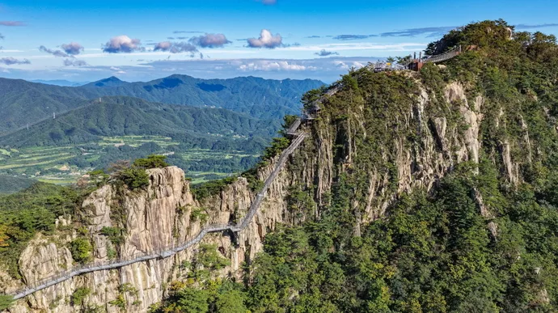
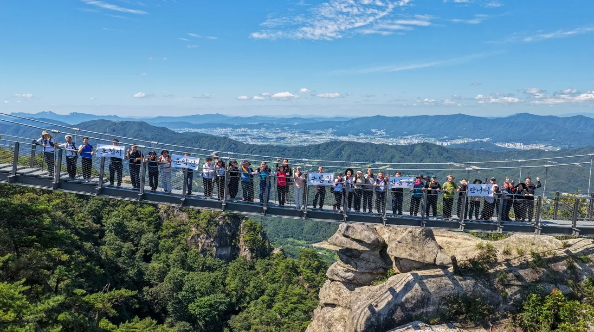
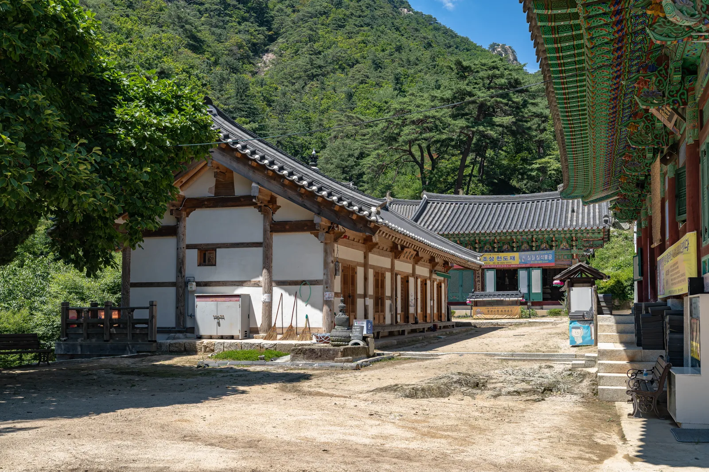
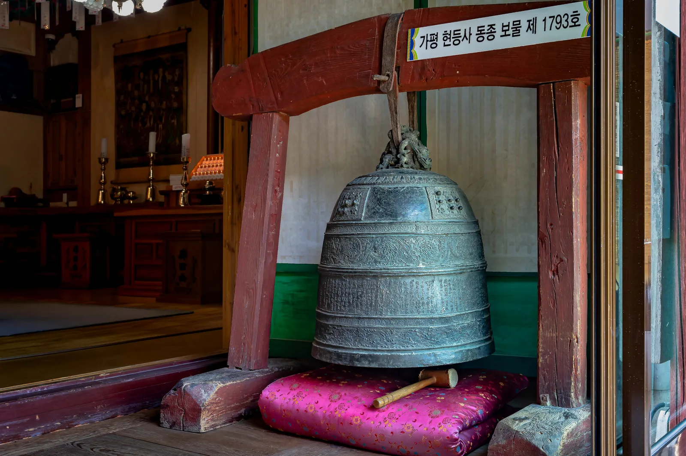
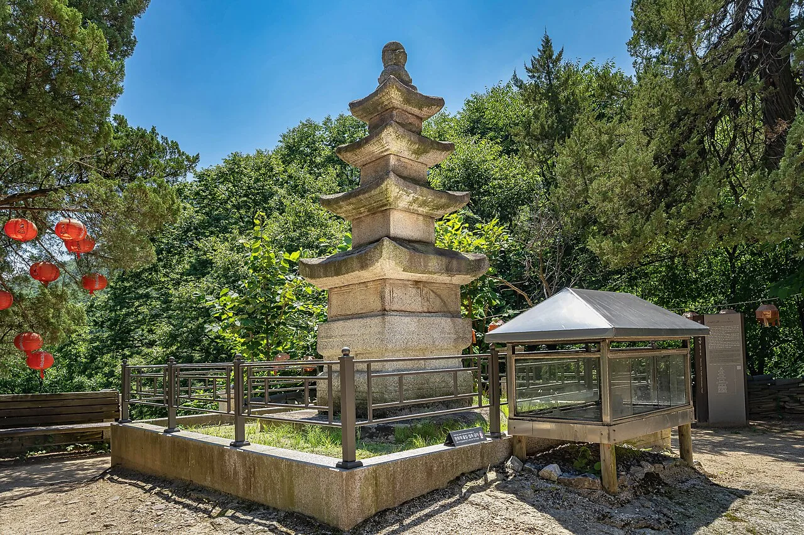
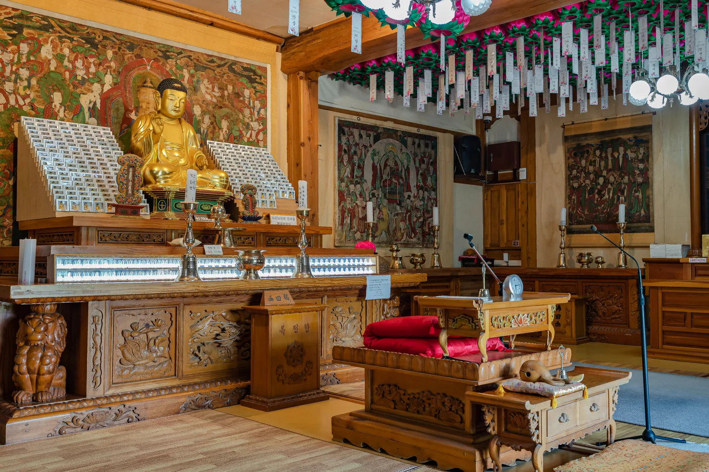
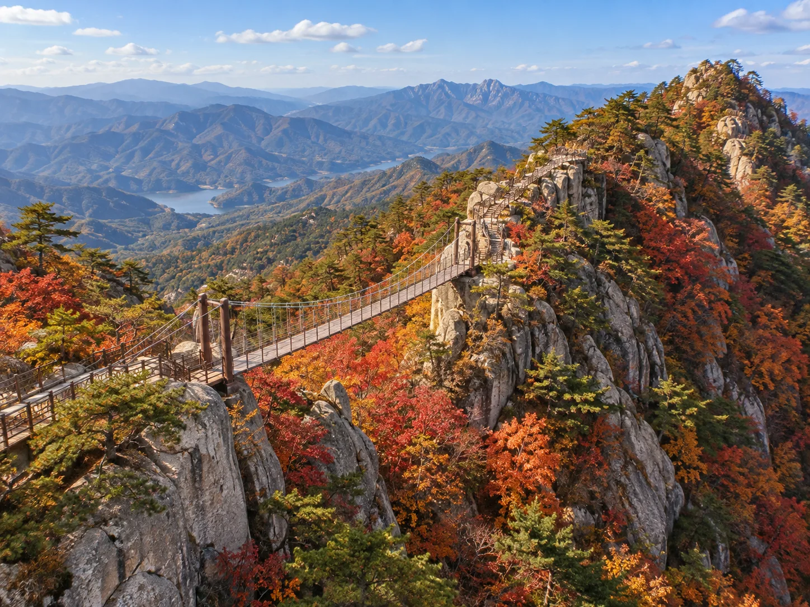
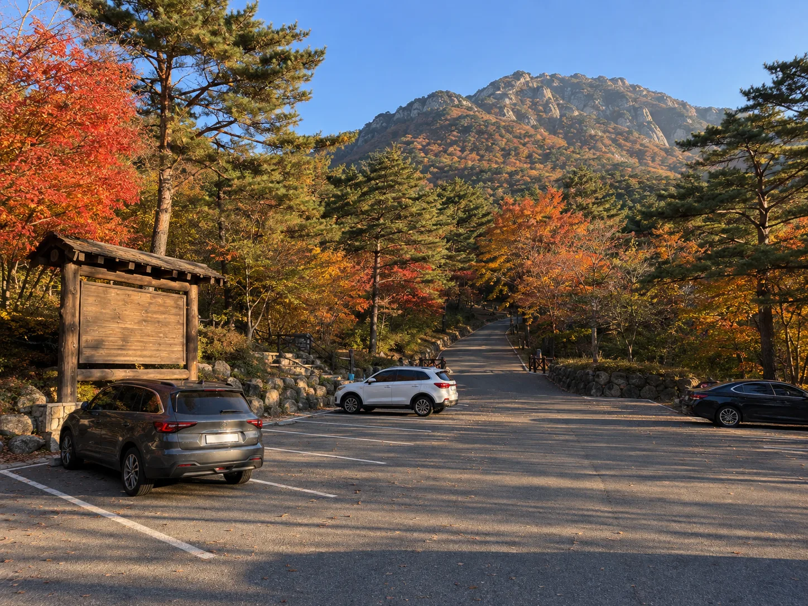

▲ 해발 약 800m 암릉을 가로지르는 운악산 구름길. 출렁다리 41m와 잔도 88m를 합쳐 129m다 사진=포천시
1. 포천에 다리가 하나 더 생겼다, 그런데 명성산이 아니다
포천시가 2026년 9월 7일, 운악산 해발 약 800m 암릉 구간에 새로운 산림 관광시설 '운악산 구름길'을 개방했다. 절벽과 절벽 사이를 잇는 출렁다리 41m와 암벽에 붙여 지은 잔도 88m를 더해 총 129m, 여기에 능선계단 127m와 정상 전망대까지 갖췄다. 백영현 포천시장의 공약 사업으로, 2024년 2월 기본·실시설계에 들어가 같은 해 11월 착공했고 약 31억 원(도비 40%·시비 60%)이 투입됐다.
포천 하면 억새 명소 명성산을 먼저 떠올리는 사람이 많지만, 운악산은 완전히 다른 산이다. 명성산이 산정호수를 끼고 가을 억새로 이름났다면, 운악산은 암봉과 기암괴석이 병풍처럼 두른 '경기의 금강산'로 통한다. 이번에 개방된 구름길도 명성산이 아니라 운악산에 새로 놓인 시설이라는 점부터 짚어야 헷갈리지 않는다.

▲ 개통 전날 사전점검에 나선 포천시 관계자와 주민들. 현수막에 '포천시 운악산 구름길 감동을 만나다'라고 적혀 있다 사진=포천시
2. '구름길'이라는 이름, 스펙으로 보면 이렇다
운악산 구름길은 절벽에 붙은 잔도와 그 사이를 잇는 출렁다리로 구성된다. 해발 800m 고지대에 설치된 보도 교량으로는 국내 최정상급 높이이고, 절벽을 따라 조성된 잔도는 국내 최고 해발 고도라는 설명이 붙는다. '구름길'이라는 이름도 이 높이에서 구름 위를 걷는 듯한 조망을 준다는 데서 나왔다.
| 항목 | 내용 |
|---|---|
| 위치 | 경기도 포천시 화현면 화현리 일대, 해발 약 800m |
| 구성 | 출렁다리 41m + 절벽 잔도 88m = 총 129m, 능선계단 127m, 정상 전망대 |
| 개통 | 2026년 9월 7일 정식 개방 (전날 사전점검·안전점검 완료) |
| 사업비 | 약 31억 원 (경기도비 40% · 포천시비 60%) |
| 추진 경과 | 2024년 2월 기본·실시설계 착수 → 같은 해 11월 착공 |
| 이용료 | 무료 |
| 향후 계획 | 2027년 대궐터 방향 신규 등산로 조성 → 완공 시 순환형 등산로로 연결 |
포천시장은 개통 당시 "운악산 구름길은 험한 산의 지형을 새로운 관광 자원으로 만든 시설"이라며 안전 관리를 최우선에 두겠다고 밝혔다. 절벽 구간인 만큼 강풍·강우 특보 시에는 통제될 수 있어, 방문 전 포천시 관광 관련 안내를 확인하는 편이 안전하다.
3. 등산코스 — 구름길만 보고 올지, 현등사까지 돌지
구름길을 포함한 등산 코스는 주차장 → 완만한 숲길 → 암릉 진입로 → 출렁다리·잔도 구간 → 만경대 조망 → 능선 → 현등사 → 원점 복귀 순서로 짜여 있다. 전체 소요시간은 약 3시간 30분~4시간. 절벽 구간을 지나면 능선을 따라 걷다 현등사로 내려오는 흐름이라, 계곡·고찰까지 함께 보는 코스다.

▲ 현등사 경내. 뒤로 운악산 암봉이 병풍처럼 둘러쳐 있다 사진=Wikimedia Commons (a.t.a.b.3.3.5, CC BY-SA 3.0)
운악산은 포천시 화현면과 가평군 조종면 경계에 걸쳐 있어, 어느 쪽에서 오르느냐에 따라 코스 이름과 경유지가 달라진다. 가평 쪽에서는 조종면 운악리 공영주차장을 기점으로 현등사입구-눈썹바위-병풍바위-만경대-동봉(비로봉)-남근석-절고개-현등사-백년폭포로 이어지는 원점회귀 코스가 대표적이다. 이번 기사에서 다루는 구름길은 포천시 화현면 쪽 신규 구간으로, 기존 코스와 능선 위에서 만나는 별개의 시설이라고 보면 된다.
| 구분 | 주요 경유지 | 비고 |
|---|---|---|
| 포천 구름길 코스 | 주차장-숲길-암릉 진입로-출렁다리·잔도-만경대 조망-능선-현등사-원점 | 2026년 9월 신규 개방, 약 3시간 30분~4시간 |
| 가평 만경대 코스 | 현등사입구-눈썹바위-병풍바위-만경대-동봉-남근석-절고개-현등사-백년폭포 | 기존 대표 코스, 암릉 구간多 |
📍 암릉산이라 장비는 필수
운악산은 암릉구간이 많고 경사가 급해 철제 계단과 로프 구간이 자주 나온다. 등산화와 장갑은 기본으로 챙기고, 우천 직후에는 바위가 미끄러울 수 있어 각별히 주의해야 한다.
4. 현등사 — 신라시대에 지어진 절, 등산로의 쉼표
현등사는 신라 법흥왕(23대) 때 인도의 승려 마라난타를 위해 창건됐다고 전해지는 고찰이다. 고려 희종 때 국사 진억이 운악산에서 빛이 나는 자리를 발견하고 돌 축대 위에서 옥등을 찾아, 그 자리에 절을 다시 짓고 '현등사'라 이름 붙였다는 유래가 남아 있다. 현등사가 있어 운악산은 예로부터 현등산으로도 불렸다.

▲ 현등사 동종. 보물 제1793호로 지정돼 있다 사진=Wikimedia Commons (a.t.a.b.3.3.5, CC BY-SA 3.0)
경내에는 동종(보물 제1793호)을 비롯해 삼층석탑, 진억국사 사리탑, 목조아미타좌상 등 문화재급 유물이 여럿 남아 있다. 절 규모는 크지 않지만 천년 고찰의 정취와 함께, 등산객에게는 절벽 구간을 지나온 뒤 잠시 숨을 돌리는 쉼표 역할을 한다.

▲ 현등사 삼층석탑. 경내 소나무 숲 사이에 자리한다 사진=Wikimedia Commons (a.t.a.b.3.3.5, CC BY-SA 3.0)

▲ 법당 내부의 목조아미타좌상과 탱화 사진=Wikimedia Commons (a.t.a.b.3.3.5, CC BY-SA 3.0)
5. 왜 '경기의 금강산'인가 — 단풍과 경기 5악
운악산은 화악산·관악산·감악산·송악산과 함께 경기 5악으로 꼽힌다. 큰 산은 아니지만 암릉구간이 많고 경사가 급해, 예로부터 산세가 아름답다는 뜻에서 '경기의 금강산'이라 불렸다. 특히 정상부 만경대는 경기 5악 중에서도 손꼽히는 조망 포인트로, 남쪽으로 현리 시가지, 북쪽으로 명지산·화악산까지 겹쳐 보인다.

▲ 실제 촬영 사진이 아닌, 단풍철 운악산 암릉과 구름길을 형상화한 AI 생성 예시 이미지다 이미지=AI 생성
단풍 절정은 대체로 10월 중순부터 11월 초순 사이로 본다. 다만 산 아래쪽은 떡갈나무, 위쪽은 소나무가 많은 편이라 다른 산에 비해 단풍색이 화려하지만은 않다는 평도 있다. 그래도 암릉과 붉은 단풍이 겹쳐 보이는 장면 자체가 운악산의 대표 풍경으로 꼽힌다.
6. 드라이브 코스와 주차 정보
자가용으로 이동한다면 내비게이션에 '운악산 매표소', '현등사', '운악산 휴게소' 중 하나를 입력하면 찾기 쉽다. 포천 시내에서는 43번 국도를 타고 화현면 방향으로 이동하면 되고, 서울 쪽에서는 43번 국도를 거쳐 화현 IC 인근에서 진입하는 경로가 일반적이다.

▲ 실제 촬영 사진이 아닌, 단풍철 등산로 입구 주차장을 형상화한 AI 생성 예시 이미지다 이미지=AI 생성
가평 쪽 조종면 운악리 공영주차장은 평일 오전 9시~오후 6시 운영되며, 주말과 공휴일에는 시간 제한 없이 24시간 이용할 수 있다. 출렁다리·잔도 구간의 이용 가능 시간은 오전 9시~오후 6시(마감 오후 5시 30분)로 정해져 있어, 늦은 오후 출발은 피하는 편이 좋다. 단풍철 주말에는 진입로와 주차장이 붐빌 수 있어 오전 일찍 출발하는 것을 권한다.
운악산에서 산정호수까지는 차로 약 25~30분 거리다. 명성산 억새와 운악산 구름길을 하루에 묶어 코스로 짜는 방법도 대한민국 구석구석에서 확인 가능하다. 다만 두 산은 서로 다른 산이라는 점, 그리고 구름길과 억새 명소는 각각 다른 주차장에서 출발한다는 점은 헷갈리지 않아야 한다.
✅ 출발 전 확인할 것
· 운악산 ≠ 명성산 — 목적지 이름을 정확히 입력할 것
· 구름길·잔도 이용 가능 시간은 09:00~17:30 마감
· 절벽 구간이라 강풍·강우 특보 시 통제 가능성 있음
· 암릉 구간이 많아 등산화·장갑 필수
· 단풍철 주말은 오전 일찍 출발 권장